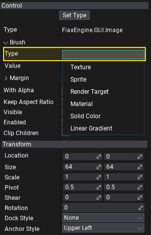
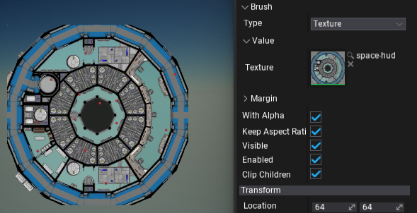
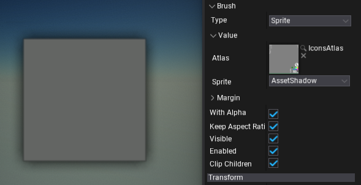
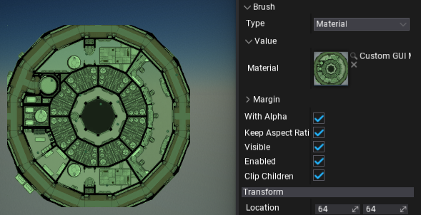
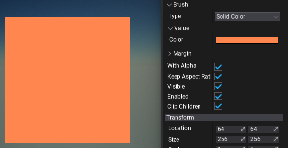
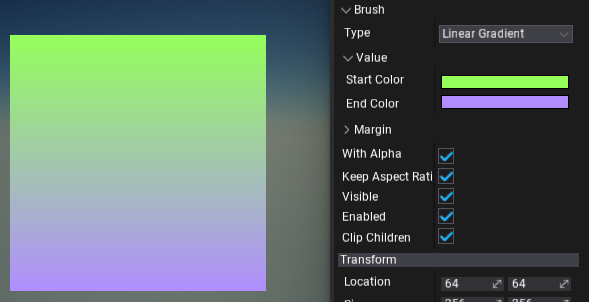

Brushes
Brushes are objects that define the logic used to draw the GUI control area. For instance, Image control exposes the Brush property which can be assigned to describe how to render the image contents.
Brushes can be created and modified via the editor or from C# code (see IBrush interface).
To use the brush simply select the brush type from the dropdown menu and setup its properties (as shown in a picture below; editing Image control).

Texture Brush
Brush that draws a texture.

Sprite Brush
Brush that draws a single sprite from the sprite atlas.

GPU Texture Brush
Brush that draws a render target surface (assigned from code).
var texture = new GPUDevice().CreateTexture();
var desc = GPUTextureDescription.New2D(640, 480, PixelFormat.R8G8B8A8_UNorm);
texture.Init(ref desc);
// Reference to an Image control
image.Brush = new GPUTextureBrush(texture);
Material Brush
Brush that draws the GUI material. To learn how to use it see the related tutorial here.

Solid Color Brush
Brush that fill the area with a single, solid color.

Linear Gradient Brush
Brush that draws a linear, two-color gradient between top and bottom edges of the area.
